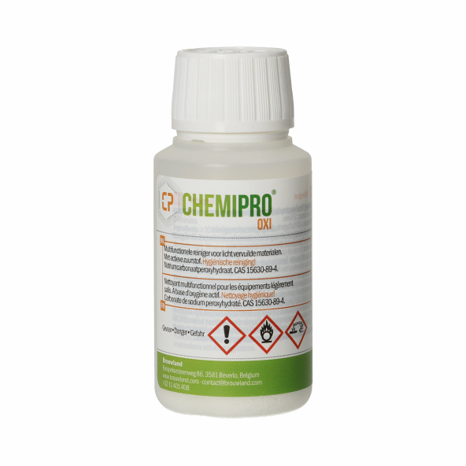
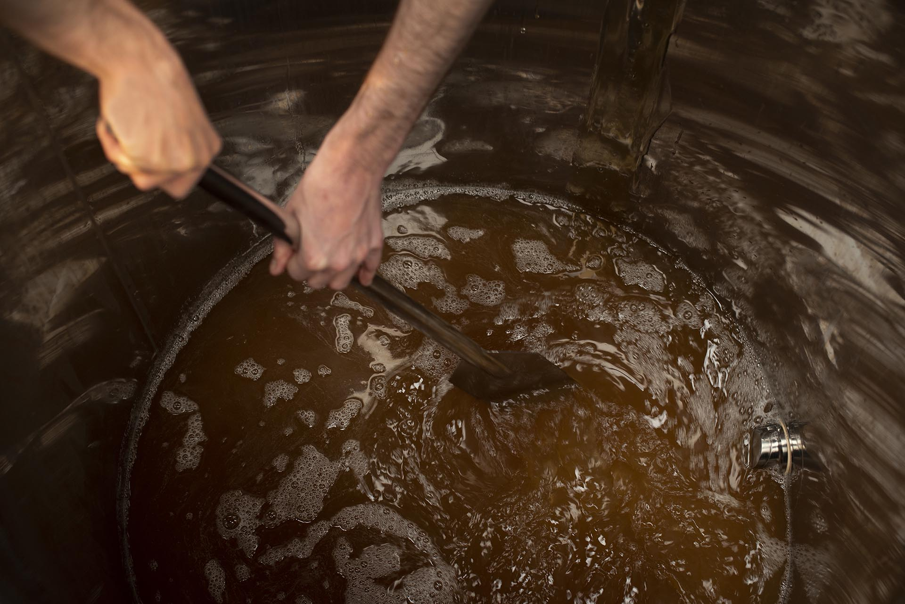

Het maken van mead is een proces dat enige tijd en aandacht vereist, maar het eindresultaat kan een heerlijke, unieke drank zijn. Hier is een uitgebreide uitleg van het proces van het maken van mead:
Apparatuur voorbereiden: Voordat je begint met het maken van mead, is het belangrijk om al je apparatuur te reinigen en te ontsmetten. Dit omvat onder andere fermentatie-emmers, bottels, slangen, thermometers, etc.
Voor het maken van mead heb je honing, water, gist en eventueel andere smaakmakers nodig. Honing en water worden samen in een fermentatie-emmer gedaan, afhankelijk van de gewenste zoetheid van de mead kan de hoeveelheid honing variëren. Voeg dan gist toe.
De mead wordt gefermenteerd tussen de 20-25 graden Celsius, dit gebeurt door de gist die de suikers in de honing omzetten in alcohol. Dit proces kan enkele weken tot een paar maanden duren.
Nadat de fermentatie is voltooid, wordt de mead gerijpt, dit kan enkele maanden tot enkele jaren duren. Tijdens de rijping, zullen de smaken van de mead zich ontwikkelen en verfijnen.
Nadat de mead is gerijpt, wordt deze gefilterd en gebotteld. Hierdoor wordt de mead helder.
Proef de mead om te controleren of de smaak en zoetheid naar wens is. Indien nodig, kun je nog iets bijstellen, zoals het toevoegen van honing of specerijen.
Bewaar de mead op een koele en donkere plaats, vermijd direct zonlicht.
Het maken van mead is een proces waarbij de tijd, de temperatuur en de hoeveelheid honing en andere smaakmakers een belangrijke rol spelen. Het is belangrijk om te experimenteren met verschillende recepten en ingrediënten om een unieke smaak van mead te creëren. Bovendien is het belangrijk om hygiëne te behouden tijdens het gehele proces, om te voorkomen dat ongewenste micro-organismen zich mengen met de gist die verantwoordelijk is voor de fermentatie.
bij het maken van mead is het belangrijk om de apparatuur en ingrediënten te ontsmetten om te voorkomen dat ongewenste micro-organismen zich mengen met de gist die verantwoordelijk is voor de fermentatie. Er zijn verschillende manieren om dit te doenwaaronder:
Gebruik van een ontsmettingsmiddel zoals een oplossing van waterstofperoxide of een speciaal ontsmettingsmiddel voor bier- of wijnbereiding. Dit wordt gebruikt om de apparatuur en ingrediënten te ontsmetten voordat ze worden gebruikt.
van de apparatuur door deze te onderdompelen in kokend water of door deze te verhitten tot een hoge temperatuur.
van een afwasmiddel om de apparatuur en ingrediënten te reinigen, gevolgd door een ontsmettingsmiddel.
Het gebruik van gefilterd of gedestilleerd water in plaats van kraanwater.
Het is belangrijk om de richtlijnen van het ontsmettingsmiddel of -proces te volgen en om te zorgen dat alles grondig gereinigd en ontsmet is voordat je begint met fermenteren.
Het is ook belangrijk om hygiëne te behouden tijdens het fermentatieproces, zoals het dragen van handschoenen, het werken in een schone omgeving en het vermijden van contact met ongewenste micro-organismen
De smaak van mead wordt beïnvloed door de soort honing die wordt gebruikt.
Hier zijn enkele voorbeelden van verschillende soorten honing en hun invloed op de smaak van mead:
Acacia honing: Acacia honing heeft een licht zoete smaak en een delicate geur, het geeft meestal een licht zoete smaak aan mead, met een subtiele bloemengeur.
Lindehoning: Lindehoning heeft een zoete smaak met een nootachtige smaak. Het geeft meestal een volle smaak aan mead met een licht bittere smaak.
Klaverhoning: Klaverhoning heeft een zoete smaak met een kruidige smaak. Het geeft meestal een volle smaak aan mead met een kruidige afdronk.
Rapshoning: Rapshoning heeft een licht zoete smaak met een kruidige smaak. Het geeft meestal een licht zoete smaak aan mead met een kruidige afdronk.
Wildehoning: Wildehoning is een mengsel van verschillende soorten honing, het heeft een meer complexe smaak dan gewone honing. Het geeft meestal een complexe smaak aan mead.
Rauwe honing: Rauwe honing, honing die niet is verhit of gefilterd, kan een rijkere smaak hebben van de honing dan mead gemaakt met gefilterde honing.
Het is belangrijk om te onthouden dat de smaak van mead ook kan worden beïnvloed door andere ingrediënten die worden toegevoegd, zoals fruit, specerijen of kruiden. Experimenteren met verschillende soorten honing en andere ingrediënten kan leiden tot interessante en unieke smaken van mead.
Fermentatie is een proces waarbij micro-organismen, zoals gist of bacteriën, suikers omzetten in alcohol en zuren. Bij de fermentatie van honing (meden) wordt de suiker in de honing omgezet in alcohol door de aanwezigheid van gist. Dit proces wordt gebruikt om bier en mead (honingwijn) te maken. Mead wordt vaak gemaakt door honing, water en gist te mengen en te laten fermenteren. Bij het maken van mead kan ook andere smaakmakers zoals fruit, specerijen of kruiden toegevoegd worden.
Er zijn veel manieren om smaak aan mead toe te voegen, afhankelijk van de gewenste smaak en het soort mead dat je wilt maken. Hier zijn enkele voorbeelden:
Fruit: Fruit kan worden toegevoegd aan mead tijdens de fermentatie of na de fermentatie. Fruit geeft een fruitige smaak aan mead, afhankelijk van het type fruit dat wordt gebruikt. Bijvoorbeeld bessen voor een rood fruit smaak, of appels voor een frisse smaak.
Kruiden en specerijen: Kruiden en specerijen kunnen worden toegevoegd aan mead tijdens of na de fermentatie om smaak aan te brengen. Bijvoorbeeld kruidnagel, kaneel, gember of koriander voor een specerijen smaak.
Honing: Honing kan worden toegevoegd aan mead na de fermentatie om de smaak van de honing te versterken.
Oak vaten: Mead kan worden gerijpt in eikenhouten vaten, wat een kenmerkende smaak geeft van vanille, koffie, chocolade of rokerigheid.
Rauwe honing: Mead gemaakt met rauwe honing, honing die niet is verhit of gefilterd, kan een rijkere smaak hebben van de honing dan mead gemaakt met gefilterde honing.
Het is belangrijk om te onthouden dat de smaak van mead kan veranderen tijdens het fermentatieproces en tijdens het rijpen. Het is daarom aan te raden om proefmonsters te nemen tijdens het fermentatieproces en tijdens het rijpen, om de smaak te controleren en aan te passen indien nodig.
Het bottelen van mead is een belangrijk onderdeel van het mead-maakproces, omdat het bepaalt hoe de mead zich zal ontwikkelen en houdbaar is. Hier is een uitgebreide uitleg over het bottelen van mead:
Voordat je begint met het bottelen, is het belangrijk om de mead te filteren. Dit helpt om ongewenste deeltjes en sediment te verwijderen en de mead helder te maken. Er zijn verschillende methoden voor het filteren van mead, zoals het gebruik van een zakfilter of een koolstoffilter.
Voordat je de mead in flessen gaat doen, is het belangrijk om een proefmonster te nemen en de smaak, zoetheid en alcoholgehalte te controleren. Indien nodig kun je nog iets bijstellen, zoals het toevoegen van honing of specerijen.
Voordat je de mead in de flessen gaat doen, is het belangrijk om de flessen te reinigen en te ontsmetten. Gebruik hiervoor bijvoorbeeld een oplossing van waterstofperoxide of een speciaal ontsmettingsmiddel voor bier- of wijnbereiding.
Gebruik een slang met een bottelpomp of een trechter om de mead in de flessen te gieten. Het is belangrijk om de flessen voorzichtig te vullen zonder te veel lucht in de flessen te krijgen.
Na het bottelen, kun je de flessen kapseis maken. Dit helpt om te voorkomen dat er lucht in de flessen komt en daardoor de mead bederft.
Bewaar de gebottelde mead op een koele en donkere plaats, vermijd direct zonlicht. Bewaar de mead niet te warm, omdat de warmte de smaak van de mead kan veranderen.
Laat de gebottelde mead rijpen, afhankelijk van de gewenste smaak kan dit enkele weken tot enkele jaren duren.
Het bottelen van mead is een belangrijk proces, omdat het bepaalt hoe de mead zich zal ontwikkelen en houdbaar is.
Het is belangrijk om de flessen en de mead zelf goed schoon te maken en te ontsmetten, om te voorkomen dat de mead bederft.
Bovendien, laat de mead rijpen voor een optimale smaak
naam: bram barbé
plaats bedrijf: Maatheide 2, 3920 Lommel
mail addres: meadworld@outlook.be tel: 011/76 82 56